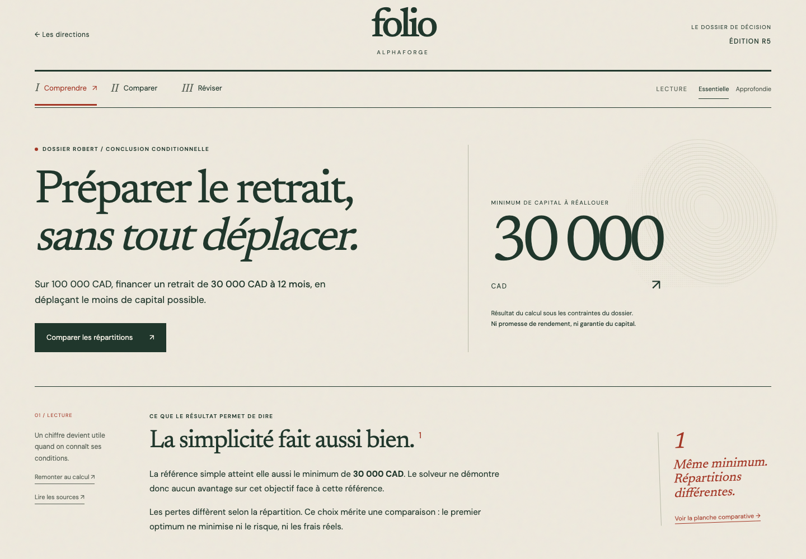
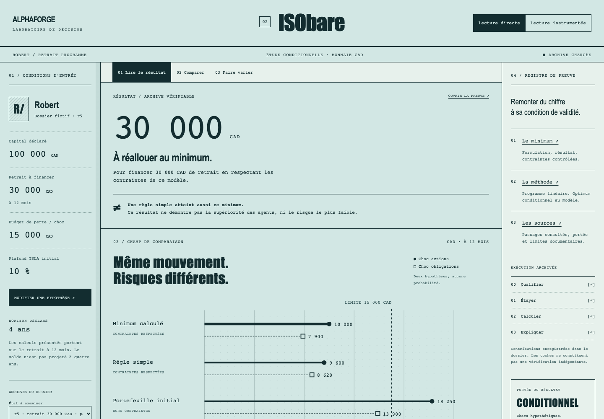
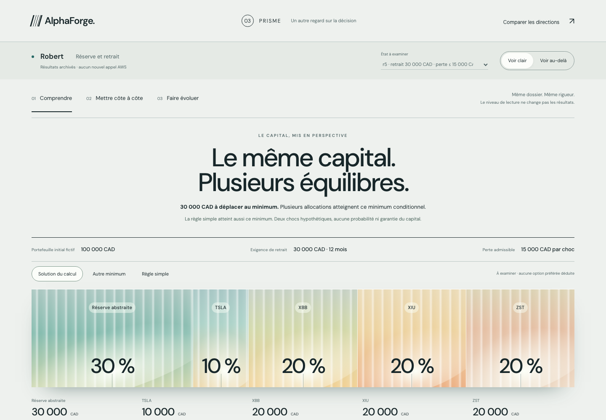

01
Folio
La décision se lit.
Une page éditoriale. La conclusion ouvre la lecture, les raisons occupent la marge et la révision devient un erratum.
PapierDemi-teintesCourbes topographiques
Ouvrir Folio ↗Trois prototypes à manipuler · même dossier Robert
Financer un retrait de 30 000 CAD à 12 mois à partir de 100 000 CAD, en déplaçant le moins de capital.
Le minimum calculé : 30 000 CAD. Une règle simple atteint aussi ce minimum. Les chocs restent hypothétiques, la réserve abstraite.
Archives réellement exécutées · variantes calculées sur copie · aucune modification du produit principal.
Une page éditoriale. La conclusion ouvre la lecture, les raisons occupent la marge et la révision devient un erratum.

Un instrument de travail. Les commandes restent en place ; le champ de mesure met les différences à l’épreuve.

Une table lumineuse. Le capital devient une surface à examiner, puis les options se placent côte à côte.
Captures du navigateur à contenu et taille identiques : 1 440 × 1 000 px ; mobile : 390 × 844 px. Ouvrez une direction pour manipuler le prototype. Les captures ne simulent pas un calcul.
Dans chaque direction, la lecture approfondie remet les hypothèses et la méthode au premier plan. Elle ne change aucun résultat.
Ce qui change vraiment
| Folio | Isobare | Prisme | |
|---|---|---|---|
| Point de départ | Une phrase et sa portée | Un mandat et un champ de mesure | Un résultat, puis le capital réparti |
| Explorer les options | Planche comparative annotée | Barres, seuils et valeurs alignées | Film horizontal et détails d’une option |
| Preuves | Notes en marge et chiffre cliquable | Contrôles et journal inspectables | Panneau opaque conservant le contexte |
| Force | Guider une première lecture | Comparer précisément et rapidement | Inviter à manipuler sans surcharger |
| Compromis | Plus de défilement, moins de simultanéité | Grammaire technique plus exigeante | Plus d’espace, moins de valeurs simultanées |
Les références, matières originales, correspondances aux données et résultats de la critique sont conservés avec le prototype. Aucun élément photographique ou artistique externe n’est incorporé. Les textures sont dessinées en CSS/SVG ; les polices locales conservent leurs licences.